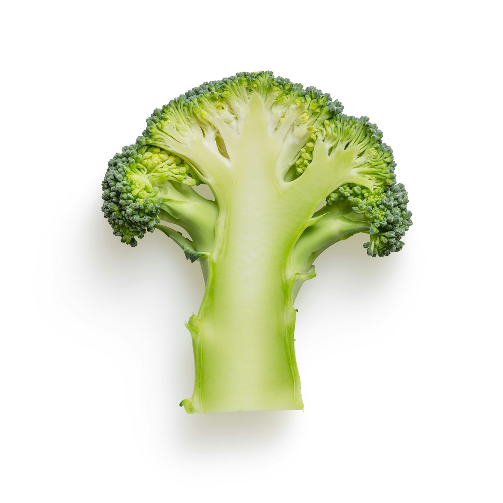

Mortar & Pestle vs. Blade Grinding: Friction Heat, Cell Lysis, and Flavor Preservation

In the modern high-tech kitchen, electric spice grinders and high-speed blenders spinning at 25,000 RPM promise effortless pulverization in seconds. Yet, in elite culinary ateliers and traditional gastronomic cultures across the Mediterranean, Southeast Asia, and the Americas, the ancient stone mortar and pestle remains the undisputed master of flavor extraction. This preference is not mere culinary romanticism; it is grounded in fundamental material science, thermodynamics, and cellular biomechanics.
The Kinetic Distinction: Shear Pressure vs. Impact Shattering
A motorized blade pulverizes dry spices via violent, high-velocity impact, generating localized frictional heat that vaporizes delicate monoterpenes. A heavy stone mortar crushes plant cells through continuous compressive shear, lysing cell walls while maintaining cool surface temperatures that preserve volatile essential oils.
1. The Thermodynamic Penalty of High-Speed Blade Grinding
When an electric spice grinder operates, its stainless steel blades rotate at velocities between 15,000 and 30,000 RPM. Within fifteen seconds of continuous operation:
- Frictional Thermal Surge: The friction between spinning metal blades and hard spice seeds generates localized temperatures exceeding 145°F – 175°F (63°C – 80°C) inside the grinding chamber.
- Monoterpene Flash Evaporation: Volatile compounds with low vapor pressures (such as myrcene in black pepper, linalool in coriander, and menthol in dried mint) vaporize into the air gap of the grinder and escape the moment the lid is opened.
- Lipid Oxidation Acceleration: High-speed turbulent air vortexes inside the grinder chamber force atmospheric oxygen into intimate contact with newly liberated polyunsaturated fatty acids, initiating rapid oxidative rancidity.

Figure 3.1: Fibrous botanical rhizomes like turmeric and ginger require compressive cell crushing to liberate intracellular juices.2. Cellular Biomechanics: Crushing vs. Slicing
Plant cells are reinforced by rigid outer walls composed of cellulose microfibrils, hemicellulose, and pectin matrices. Inside these cells lie vacuoles and specialized lipid globules containing aromatic compounds.
The Blade Mechanism (Mechanical Fracture): High-speed blades shatter brittle seeds into sharp, angular micro-particles. However, a significant percentage of microscopic plant cells remain intact within these particles, locking their flavor compounds inside un-ruptured cell walls.
The Mortar Mechanism (Compressive Hydrostatic Lysis): The curved, coarse surface of a heavy granite or volcanic stone mortar exerts immense compressive force combined with rotational shear. As the pestle rolls across the seeds, it collapses cellular membranes completely, expressing intracellular water and essential oils into a homogenous, cohesive paste.
3. Comparative Matrix: Milling Modalities Evaluated
To evaluate the physical and sensory differences between grinding tools, our atelier conducted standardized trials on whole Tellicherry peppercorns and coriander seeds:
| Performance Parameter | High-Speed Electric Blade Grinder | Granite Mortar & Pestle (Molcajete / Suribachi) | Conical Ceramic Burr Grinder |
|---|---|---|---|
| Operating Chamber Temp | 140°F – 175°F (High thermal stress) | 72°F – 78°F (Ambient / Cool) | 85°F – 95°F (Low thermal rise) |
| Volatile Terpene Retention | 45% – 60% (Significant losses) | 88% – 95% (Maximum retention) | 75% – 82% (Moderate retention) |
| Particle Morphology | Irregular, dust-and-boulder shards | Uniformly flattened, bruised flakes | Even, calibrated geometric granules |
| Paste & Emulsion Capability | Poor (Requires excess liquid) | Superior (Self-emulsifying paste) | None (Dry seeds only) |
 Figure 3.2: Crushing whole peppercorns in stone fractures the piperine-rich outer layer while releasing inner volatile terpenes.
Figure 3.2: Crushing whole peppercorns in stone fractures the piperine-rich outer layer while releasing inner volatile terpenes.
4. Geology and Material Selection in Mortars
The physical material of the mortar dictates its grinding efficiency and longevity:
- Dense Unpolished Granite: Heavyweight (8 to 12 lbs) granite mortars provide massive gravitational inertia. The micro-rough crystalline texture grips seeds effortlessly, preventing them from skittering across the bowl under pressure.
- Porous Basaltic Volcanic Stone (Mexican Molcajete): Features vesicular pores that act as microscopic cutting teeth, making it supreme for grinding fibrous garlic, chilies, and whole cumin into luscious salsas.
- Glazed Ceramic or Porcelain: Smooth, non-porous, and non-reactive; ideal for delicate botanical powders or citrus zest reductions where zero flavor cross-contamination is required.
- Cast Iron: Immense durability and mass, but must be kept seasoned with culinary oil to prevent iron oxidation and metallic off-notes when preparing acidic herb pastes.
5. The Physics of the Mortar Technique: Pounding vs. Rolling
Proper mortar operation involves two distinct biomechanical phases:
- Phase 1 – Vertical Percussion (Pounding): Hold the pestle firmly and use deliberate, rhythmic downward vertical strikes directly onto hard seeds (such as allspice berries, peppercorns, or whole cardamom). This shatters the tough outer husk without scattering particles.
- Phase 2 – Rotational Shear (Grinding): Once the bulk seeds are broken into coarse fragments, lean your upper body weight over the pestle and execute firm circular and figure-eight sweeping motions against the contoured wall of the mortar. The shear friction reduces the particles to a silky powder or unctuous wet paste.
6. Self-Emulsification in Fresh Herb Pastes
When fresh mint leaves, garlic cloves, sea salt, and whole toasted cumin are crushed together in a stone mortar, an extraordinary chemical synergy occurs. The coarse salt crystals act as a mineral abrasive, tearing open plant cell walls.
As cellular moisture combines with natural allium mucilage and lipid essential oils, the stone pestle mechanically shears the mixture into a self-stabilizing micro-emulsion. The resulting paste boasts a velvety viscosity, radiant color, and aromatic persistence that no high-speed blender can replicate.
7. Seasoning and Care: Maintaining Stone Mineral Porosity
A traditional volcanic or granite mortar must be seasoned before its first culinary use. Grinding batches of raw white rice with coarse rock salt and garlic cloves polishes loose stone grit and embeds natural rice starches into deep pores.
Never wash a seasoned stone mortar with harsh synthetic detergents; the porous rock will absorb soap perfumes, tainting future spice blends. Clean with hot water and a stiff nylon brush, then air-dry completely in a well-ventilated space.
8. Frequently Asked Questions on Spice Milling Physics
How much spice should be ground in a mortar at one time?
Fill the mortar bowl to no more than one-third of its total capacity. Overfilling prevents the pestle from establishing direct compressive contact with the stone walls, causing seeds to bounce rather than grind.
Why do freshly ground spices smell stronger than pre-ground spices?
Pre-ground commercial spices have had months or years for volatile monoterpenes to evaporate. Crushing whole seeds immediately before cooking releases newly synthesized aerosols at 100% molecular concentration.
Can a burr coffee grinder be used for whole spices?
Conical ceramic burr grinders work well for dry seeds like coriander and cumin because they shear seeds at low RPM with minimal thermal buildup. However, they cannot process wet garlic, fresh herbs, or oily nuts.
Key Scientific Takeaways
- High-speed electric blade grinders generate thermal spikes (up to 175°F) that vaporize delicate monoterpenes.
- Stone mortars crush cell walls through compressive shear, liberating intracellular oils without thermal damage.
- Dense granite mortars provide the gravitational inertia necessary for effortless whole-seed processing.
- Combining coarse salt with fresh herbs in a mortar creates stable, aromatic micro-emulsions.
9. Micro-Mineral Leaching and Taste Modulation in Stone Cookery
A subtle yet scientifically validated aspect of traditional volcanic and granite mortar grinding is trace mineral contact. As hard peppercorns and sea salt crystals are ground under continuous compressive friction, microscopic quantities of benign mineral silicates and iron oxides interact with acidic allicin compounds from crushed garlic and capsicums.
This microscopic mineral contact acts as a natural buffer, rounding off harsh sulfurous edges and giving traditional stone-ground salsas and pestos a deep, grounded mineral resonance that cannot be replicated in inert plastic or stainless steel vessels.
Furthermore, the mechanical crushing action expresses natural plant pectins and starch mucilage into the lipid matrix, creating a rich colloidal suspension that holds its velvety emulsion for days without weeping or separating into watery layers.